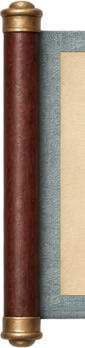
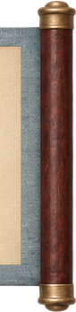
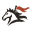
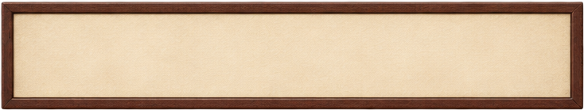
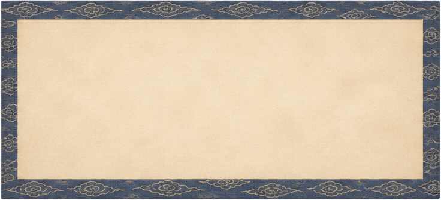
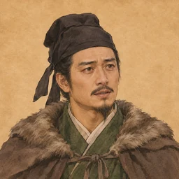

特效摆在图上（游戏 100% 大小）
在 S5 的场景上叠特效元素：右边燃烧的云梯冒火、上升烟柱，燃烧的井阑大火、蔓延火、黑烟、余烬和地上焦痕；冲车撞门处尘爆和碎木；墙脚礌石落地扬尘；雪里插箭；远处瓦砾。游戏里火焰会轮换、闪烁，烟会飘散，这里是静帧。
界面拼装（S6-05 纸纹 + S6-03/04 图标 + S5 立绘，字全是网页文字）
横幅由左右木轴和可重复的中段拼成，可以任意长；面板底是可平铺的纸纹；名牌、对话框底和立绘按游戏的方式叠字。用来看纸纹和图标放在一起是否协调。

第二幕 井阑重墙

城防
南门496/800
重墙2/4 段
余粮11 日

张郃13 日军令
鼓舞 · 督造 · 轮换

靳详

靳详伯道，你我同郡故旧。丞相大军数万，城中不过千余人，何苦以一城之卒，当举国之师？